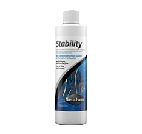

Welcome to
my Planted Tank story.
什麼是水草缸?
使用設備
Premium soil黑土
由非洲、南美洲等地的黑土經特殊軟焼結成，擁有豐富的有機酸，及氮、磷、鎂等元素，使用此當底土省去在前期需加的其他肥料。
Ista 1L Co2設備組
每天在缸裡添加Co2，作為水草行光合作用吸取碳元素之用，以幫助水草新陳代謝，穩定成長。

西肯Seachem硝化菌
使用西肯硝化菌液，培養硝化菌及亞硝化菌，使水缸內形成穩定微生物系統，分解魚隻產生的有毒氨、亞硝酸和硝酸鹽。
Ista高透光水草燈1尺
特別調整過的光珠，使其光譜能符合植物行光合作用的最佳狀態。
水草草種
澳洲天胡荽
- 葉片有明顯裂紋，生長方式更會攀爬，很適合當前景草或是綁沉木石頭
- 水質 : PH5-8 KH0-6 GH0-10 水溫15-28
- co2需求:強
- 照光強渡:強
紅柳
- 橘紅色的有莖水草，很適合當主景，強光強CO2下會更鮮紅漂亮!
- 水質 : PH5-9 KH0-10 GH0-12 水溫15-35
- CO2需求 : 不需要
- 光照需求 : 弱
細葉水芹
- 遠看會有隨水流飄逸的動感，近看時會發現細長的羽狀裂葉在水中綻放著
- 水質 : PH5.5-7.5 KH0-10 GH0-12 水溫22-32
- CO2需求 : 不需要
- 光照需求 : 弱

迷你牛毛氈
- 葉片如針狀，適合當前景草，種滿整片遠如非洲大草原
- 水質 : PH6-8 KH0-10 GH0-12 水溫15-35
- CO2需求 :弱
- 光照需求 : 弱
生物
小精靈魚
主要以藻類為食，也可將煩惱的蝸牛卵吃得一乾二淨，是水族箱中最佳的清道夫。水晶蝦
觀賞性極佳的除藻蝦，但對水質極易敏感。大和藻蝦
具有強力的吃藻能力，因此成為許多水草缸中的工具蝦種，飼養上較為簡單，有良好的水質環境和足夠的溶氧都可以生活的十分良好。
紅蓮燈魚
漂亮的典型草缸觀賞魚，性情溫和而膽小，是典型的中層魚，在光線折射下既綠又藍，尾柄處鮮紅色，游動時紅綠閃爍。印度女王燈
有清除水草缸上油膜的功能，身體狀況好時，眼睛會散發出迷人的寶藍色澤。黑燈魚
主要特點是從頭到尾部有金黃和黑色條紋各一條，眼睛的虹膜能反射出紅色及黑色的光澤。蜜蜂角螺
缸中的除藻高手，適合清理缸壁上及水草葉片上的絲藻、綠斑藻，且有如蜜蜂般的外殼。

{kind=link}
{kind=link}
{kind=link}
{kind=link}
{kind=link}
{kind=link}
{kind=link}
聲明:本網站所屬內容非業配，亦非廠商行銷，僅為個人做為html/css/js 網站切版練習之主題選用